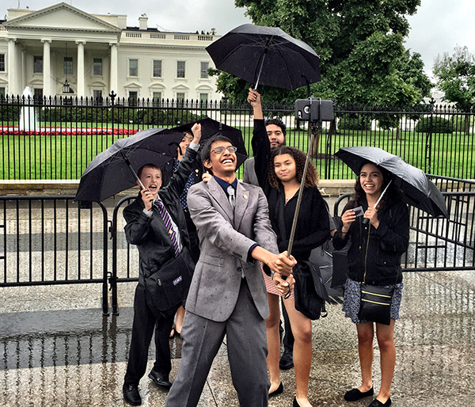

My Junior year at Hamilton High, a new student government position called the Chief Science Officer (CSO) was opened. I instantly knew I was the one for the job. My science-themed tweets and passion for connecting students, industry, and government stood out, and I became one of 138 elected 6-12th grade students representing 78 Arizona schools and 40,000 youth in the statewide cabinet. Fifty-eight percent of CSOs are female and fifty-three percent are underrepresented minorities.
At the school level, I interested my fellow students in engineering by telling them about the resources available in my community. I organized a science council to coordinate funds and publish a newsletter. I also networked with local companies such as Orbital ATK, Intel, and State Farm to foster a relationship with my school. During the 2015-2016 academic year, CSOs like myself have authored over 250 blogs, started over 71 community events, and impacted almost 24,000 students. In fall 2016, I will convene a statewide conference on improving student voice with Gov. Doug Ducey in attendance, where we will begin the process of drafting a student voice bill into Arizona law.
I also introduced the program to the Arizona congressional representatives and my advocacy took me to the White House, where I presented the program to the Office of Science and Technology Policy. Dr. John Holdren encouraged us to take the program national, so over the summer of 2015, I reached out to educational coordinators from 22 states, and 15 attended the Arizona SciTech summer institute, where I had the opportunity to discuss the logistics of the National CSO program. In September of 2016, I was invited back to the White House to participate in the Summit on Next Generation High Schools. The novelty of the CSO program lies in its grassroots and student-driven effort to enhance the STEM climate of Arizona through school impact, community voice, and collective action. Though the program is in its infancy, my work creates a platform for future students to take a more active role in their science education.
